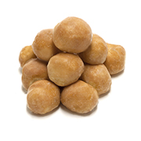

Timbits

Description
Timbits are are small, round pieces of fried dough. They are timbits and NOT "donut holes".
Ingredients:
- 1 cup all-purpose flour
- 2 tbsp sugar
- 1 tsp baking powder
- 1/4 tsp salt
- 1/2 cup milk
- 1 egg
- 1 tbsp melted butter
- Vegetable oil for frying
Steps:
- In a large bowl, whisk together the flour, sugar, baking powder, and salt.
- In a separate bowl, beat together the milk, egg, and melted butter.
- Pour the wet mixture into the dry mixture and stir until well combined.
- Fill a large, deep saucepan with oil about 2 inches deep and heat over medium heat until it reaches 350°F.
- Using a small cookie scoop or spoon, drop spoonfuls of the batter into the hot oil and fry until golden brown, about 2-3 minutes.
- Remove with a slotted spoon and drain on a paper towel-lined plate. Serve warm and enjoy!